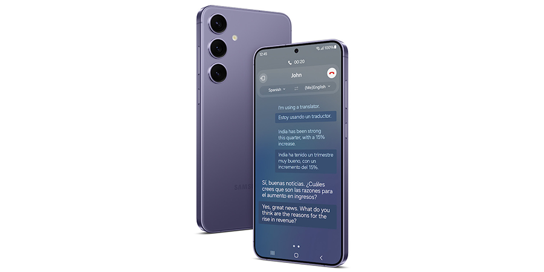
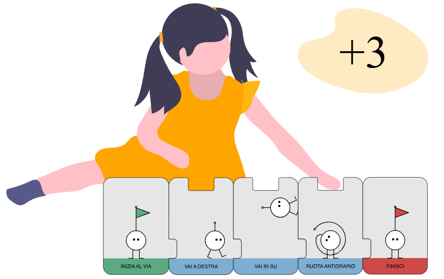

Based on machine learning technologies, Samsung Gauss consists of 3 models:
Samsung Gauss Language, which generates texts; Samsung Gauss Code, which generates code; and Samsung Gauss Image, which generates images.
Samsung Electronics expects to introduce these generative AI models to various products to enhance the consumer experience.
Product 1

AI Language of Samsung
Samsung Gauss Language is a generative language model that significantly
enhances work efficiency. It assists with tasks such as composing emails,
summarising documents, and translating content. When integrated into
products, it also enhances consumer experience by enabling smarter device control.
Product 2

Samsung Gauss AI Code
Samsung Gauss Code allows developers to code quickly and easily. This
part of the model further facilitates seamless software development
with features including code description and test case generation,
via an interactive interface.
Product 3
Samsung Gauss AI Image
Samsung Gauss Image is a generative image model that provides an
easy platform for generating and editing creative images. This
includes making style changes and additions, as well as having
the ability to convert low-resolution images into high resolution format.